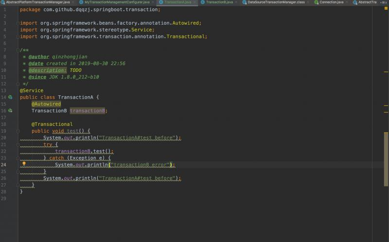
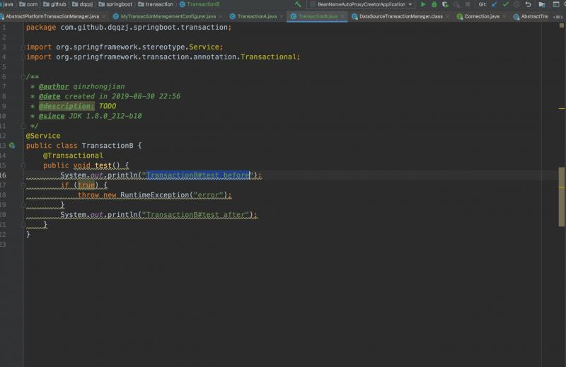

事务在后端开发中无处不在，是数据一致性的最基本保证。要明白进事务的本质就是进到事务切面的代理方法中，最常见的是同一个类的非事务方法调用一个加了事务注解的方法没进入事务。我们以cglib代理为例，由于Spring的对于cglib AOP代理的实现，进入被代理方法的时候实际上已经离开了“代理这一层壳子”，可以认为代码走到的是一个朴素的bean，调用同一个bean中方法自然与代理没有半毛钱关系了。
一般对于声明式事务都是以调用另一个类的加了@Transactional注解的public方法作为入口的。
EnableTransactionManagement注解导入TransactionManagementConfigurationSelectorTransactionManagementConfigurationSelector加载InfrastructureAdvisorAutoProxyCreator(但不一定是它，一般都是AnnotationAwareAspectJAutoProxyCreator)，BeanFactoryTransactionAttributeSourceAdvisor，TransactionInterceptorAnnotationAwareAspectJAutoProxyCreator在ioc流程一个关键步骤是查找Advisor，有两个方面，第一是实现了Advisor接口的类，第二是基于注解Aspectj。关键是BeanFactoryTransactionAttributeSourceAdvisor被加载进了代理缓存DefaultAdvisorChainFactory#getInterceptorsAndDynamicInterceptionAdvice，这个时候就会将我们的BeanFactoryTransactionAttributeSourceAdvisor派上用处，最主要的还是它里面的TransactionAttributeSourcePointcut进行匹配，执行TransactionInterceptor的方法
@Override
@Nullable
public Object invoke(MethodInvocation invocation) throws Throwable {
// Work out the target class: may be {@code null}.
// The TransactionAttributeSource should be passed the target class
// as well as the method, which may be from an interface.
Class<?> targetClass = (invocation.getThis() != null ? AopUtils.getTargetClass(invocation.getThis()) : null);
// Adapt to TransactionAspectSupport's invokeWithinTransaction...
return invokeWithinTransaction(invocation.getMethod(), targetClass, invocation::proceed);
} @Nullable
protected Object invokeWithinTransaction(Method method, @Nullable Class<?> targetClass,
final InvocationCallback invocation) throws Throwable {
// If the transaction attribute is null, the method is non-transactional.
TransactionAttributeSource tas = getTransactionAttributeSource();
final TransactionAttribute txAttr = (tas != null ? tas.getTransactionAttribute(method, targetClass) : null);
final PlatformTransactionManager tm = determineTransactionManager(txAttr);
final String joinpointIdentification = methodIdentification(method, targetClass, txAttr);
if (txAttr == null || !(tm instanceof CallbackPreferringPlatformTransactionManager)) {
// Standard transaction demarcation with getTransaction and commit/rollback calls.
TransactionInfo txInfo = createTransactionIfNecessary(tm, txAttr, joinpointIdentification);
Object retVal;
try {
// This is an around advice: Invoke the next interceptor in the chain.
// This will normally result in a target object being invoked.
retVal = invocation.proceedWithInvocation();
}
catch (Throwable ex) {
// target invocation exception
completeTransactionAfterThrowing(txInfo, ex);
throw ex;
}
finally {
cleanupTransactionInfo(txInfo);
}
commitTransactionAfterReturning(txInfo);
return retVal;
}
else {
final ThrowableHolder throwableHolder = new ThrowableHolder();
// It's a CallbackPreferringPlatformTransactionManager: pass a TransactionCallback in.
try {
Object result = ((CallbackPreferringPlatformTransactionManager) tm).execute(txAttr, status -> {
TransactionInfo txInfo = prepareTransactionInfo(tm, txAttr, joinpointIdentification, status);
try {
return invocation.proceedWithInvocation();
}
catch (Throwable ex) {
if (txAttr.rollbackOn(ex)) {
// A RuntimeException: will lead to a rollback.
if (ex instanceof RuntimeException) {
throw (RuntimeException) ex;
}
else {
throw new ThrowableHolderException(ex);
}
}
else {
// A normal return value: will lead to a commit.
throwableHolder.throwable = ex;
return null;
}
}
finally {
cleanupTransactionInfo(txInfo);
}
});
// Check result state: It might indicate a Throwable to rethrow.
if (throwableHolder.throwable != null) {
throw throwableHolder.throwable;
}
return result;
}
catch (ThrowableHolderException ex) {
throw ex.getCause();
}
catch (TransactionSystemException ex2) {
if (throwableHolder.throwable != null) {
logger.error("Application exception overridden by commit exception", throwableHolder.throwable);
ex2.initApplicationException(throwableHolder.throwable);
}
throw ex2;
}
catch (Throwable ex2) {
if (throwableHolder.throwable != null) {
logger.error("Application exception overridden by commit exception", throwableHolder.throwable);
}
throw ex2;
}
}
}这次在分析这个方法，但是从事务的异常，不生效等角度来分析问题。注解事务和编程式都一样的核心思想，下面我们来分析注解事务逻辑
if (txAttr == null || !(tm instanceof CallbackPreferringPlatformTransactionManager)) {
// Standard transaction demarcation with getTransaction and commit/rollback calls.
TransactionInfo txInfo = createTransactionIfNecessary(tm, txAttr, joinpointIdentification);
Object retVal;
try {
// This is an around advice: Invoke the next interceptor in the chain.
// This will normally result in a target object being invoked.
retVal = invocation.proceedWithInvocation();
}
catch (Throwable ex) {
// target invocation exception
completeTransactionAfterThrowing(txInfo, ex);
throw ex;
}
finally {
// 把上一层事务的TxInfo重新绑到ThreadLocal中
cleanupTransactionInfo(txInfo);
}
commitTransactionAfterReturning(txInfo);
return retVal;
}请记住这几个核心的方法逻辑顺序和异常捕获哦！
protected void completeTransactionAfterThrowing(@Nullable TransactionInfo txInfo, Throwable ex) {
if (txInfo != null && txInfo.getTransactionStatus() != null) {
if (logger.isTraceEnabled()) {
logger.trace("Completing transaction for [" + txInfo.getJoinpointIdentification() +
"] after exception: " + ex);
}
//事务回滚的异常支持
if (txInfo.transactionAttribute != null && txInfo.transactionAttribute.rollbackOn(ex)) {
try {
txInfo.getTransactionManager().rollback(txInfo.getTransactionStatus());
}
catch (TransactionSystemException ex2) {
logger.error("Application exception overridden by rollback exception", ex);
ex2.initApplicationException(ex);
throw ex2;
}
catch (RuntimeException | Error ex2) {
logger.error("Application exception overridden by rollback exception", ex);
throw ex2;
}
}
else {
// We don't roll back on this exception.
// Will still roll back if TransactionStatus.isRollbackOnly() is true.
try {
txInfo.getTransactionManager().commit(txInfo.getTransactionStatus());
}
catch (TransactionSystemException ex2) {
logger.error("Application exception overridden by commit exception", ex);
ex2.initApplicationException(ex);
throw ex2;
}
catch (RuntimeException | Error ex2) {
logger.error("Application exception overridden by commit exception", ex);
throw ex2;
}
}
}
} @Override
public boolean rollbackOn(Throwable ex) {
return (ex instanceof RuntimeException || ex instanceof Error);
}注意点来了，仅支持运行时异常和错误机制，否则不予回滚。并进行直接条件。
private void processRollback(DefaultTransactionStatus status, boolean unexpected) {
try {
//默认false
boolean unexpectedRollback = unexpected;
try {
//回调TransactionSynchronization对象的beforeCompletion方法。
triggerBeforeCompletion(status);
if (status.hasSavepoint()) {
if (status.isDebug()) {
logger.debug("Rolling back transaction to savepoint");
}
status.rollbackToHeldSavepoint();
}
// 在最外层事务边界进行回滚
else if (status.isNewTransaction()) {
if (status.isDebug()) {
logger.debug("Initiating transaction rollback");
}
// 由具体TxMgr子类实现回滚。
doRollback(status);
}
else {
// Participating in larger transaction
if (status.hasTransaction()) {
/*
* 内层事务被标记为rollBackOnly或者globalRollbackOnParticipationFailure开关开启时,给当前事务标记需要回滚。
*
* 如果内层事务显式打上了rollBackOnly的标记,最终全事务一定是回滚掉的。
*
* 但如果没有被打上rollBackOnly标记,则globalRollbackOnParticipationFailure开关就很重要了。
* globalRollbackOnParticipationFailure开关默认是开启的，也就是说内层事务挂了,最终的结果只能是全事务回滚。
* 但如果globalRollbackOnParticipationFailure开关被关闭的话,内层事务挂了,外层事务业务方法中可以根据情况控制是否回滚。
*/
if (status.isLocalRollbackOnly() || isGlobalRollbackOnParticipationFailure()) {
if (status.isDebug()) {
logger.debug("Participating transaction failed - marking existing transaction as rollback-only");
}
// 由具体TxMgr子类实现回滚。
doSetRollbackOnly(status);
}
else {
if (status.isDebug()) {
logger.debug("Participating transaction failed - letting transaction originator decide on rollback");
}
}
}
else {
logger.debug("Should roll back transaction but cannot - no transaction available");
}
// Unexpected rollback only matters here if we're asked to fail early
if (!isFailEarlyOnGlobalRollbackOnly()) {
unexpectedRollback = false;
}
}
}
catch (RuntimeException | Error ex) {
triggerAfterCompletion(status, TransactionSynchronization.STATUS_UNKNOWN);
throw ex;
}
// 回调TransactionSynchronization对象的afterCompletion方法。
triggerAfterCompletion(status, TransactionSynchronization.STATUS_ROLLED_BACK);
// Raise UnexpectedRollbackException if we had a global rollback-only marker
if (unexpectedRollback) {
throw new UnexpectedRollbackException(
"Transaction rolled back because it has been marked as rollback-only");
}
}
finally {
cleanupAfterCompletion(status);
}
}

有经验的同学肯定知道整个事务最终被回滚掉了, TransactionB#test并没有执行System.out.println("TransactionB#test after");
其实对于Spring事务来说，这样的结果是正确的，但对于开发者来说，这个结果确实看似有些“不能理解”。
首先TransactionB#test本身是直接抛出RuntimeException的，那么退栈到事务切面后，事务切面会发现需要回滚但因为TransactionB#test还不是事务的最外层边界，所以在AbstractPlatformTransactionManager#processRollback方法仅仅会调用doSetRollbackOnly(status);，子类DataSourceTransactionManager会拿出DefaultTransactionStatus中的transaction对象打上回滚标记，具体来说就是transaction对象(对于DataSourceTransactionManager来说类型是DataSourceTransactionObject)会取出ConnectionHolder，调用setRollbackOnly。我们知道这样就相当于标记是一个全局的标记了，因为只要是隶属于同一个物理事务的Spring事务都能够读到同一个ConnectionHolder。
protected void doSetRollbackOnly(DefaultTransactionStatus status) {
DataSourceTransactionManager.DataSourceTransactionObject txObject = (DataSourceTransactionManager.DataSourceTransactionObject)status.getTransaction();
if (status.isDebug()) {
this.logger.debug("Setting JDBC transaction [" + txObject.getConnectionHolder().getConnection() + "] rollback-only");
}
//关键点
txObject.setRollbackOnly();
}回到上层事务切面，在AbstractPlatformTransactionManager#commit方法读到if(!shouldCommitOnGlobalRollbackOnly() && defStatus.isGlobalRollbackOnly())条件成立，接下来调用processRollback，由于在事务最外层边界会物理回滚掉，并且也正是到了事务最外层边界,Spring抛出UnexpectedRollbackException。
那么问题怎么解决呢，这个问题有好几种解决办法，但是得根据具体情况决定。
根据实际代码与业务情况处理，如果内嵌事务注解取消，Spring也不会抛出UnexpectedRollbackException。但是方法实际上并没有完整执行，所以这样的解决思路很容易导致出现不完整的脏数据。
手动控制是否回滚。如果不能接受内嵌事务挂掉的话，可以在catch块里加上TransactionAspectSupport.currentTransactionStatus().setRollbackOnly();用于显式控制回滚。这样Spring就明白你自己要求回滚事务，而不是unexpected了。Spring也不会抛出UnexpectedRollbackException了。那么如果在上层事务中捕获到异常，真的就是不想回滚，即便上层事务发生了异常，也想要最终提交整个事务呢？如果有这样的需求的话，可以给事务管理器配置一个参数setGlobalRollbackOnParticipationFailure(false);
如果isGlobalRollbackOnParticipationFailure为false,则会让主事务决定回滚，如果当遇到exception加入事务失败时，调用者能继续在事务内决定是回滚还是继续。然而，要注意是那样做仅仅适用于在数据访问失败的情况下且只要所有操作事务能提交，这个方法也能解决，但显然影响到全局的事务属性，所以极力不推荐使用。
public final void commit(TransactionStatus status) throws TransactionException {
if (status.isCompleted()) {
throw new IllegalTransactionStateException(
"Transaction is already completed - do not call commit or rollback more than once per transaction");
}
DefaultTransactionStatus defStatus = (DefaultTransactionStatus) status;
if (defStatus.isLocalRollbackOnly()) {
if (defStatus.isDebug()) {
logger.debug("Transactional code has requested rollback");
}
processRollback(defStatus, false);
return;
}
if (!shouldCommitOnGlobalRollbackOnly() && defStatus.isGlobalRollbackOnly()) {
if (defStatus.isDebug()) {
logger.debug("Global transaction is marked as rollback-only but transactional code requested commit");
}
processRollback(defStatus, true);
return;
}
processCommit(defStatus);
}